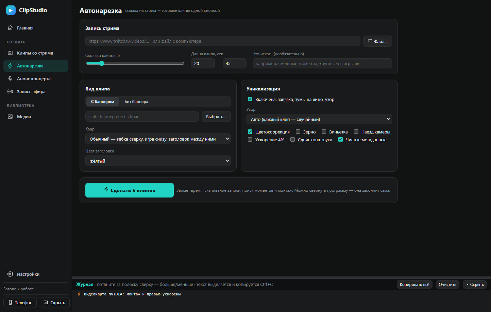
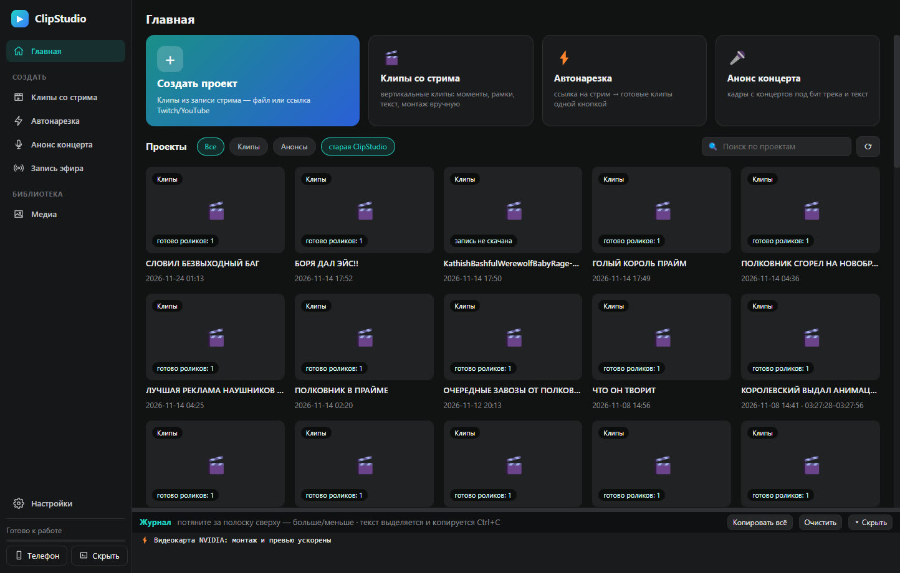

ClipStudio is a desktop video editor for streamers and clippers. Paste a Twitch or YouTube link — it finds the best moments, frames the webcam and the game, adds titles and subtitles, and renders 9:16 clips for TikTok, YouTube Shorts and Instagram Reels.

Everything a clipper does by hand — in one program on your own computer.
Speech recognition and AI pick the most interesting parts of a long stream: reactions, jokes, stories, opinions, news, drama.
The webcam and the gameplay are found automatically and stacked into a vertical 9:16 frame. Adjust them with the mouse.
A catchy title for every clip, word-by-word colours, extra text layers and automatic subtitles.
Trim, split, reorder, add pieces of the stream, images and videos as layers — like a full video editor.
One button: from a stream link to 10 finished clips, with your sponsor banner and style settings.
Post a finished clip to your own TikTok account after previewing it and choosing caption and privacy.
Every stream becomes a project with its moments, edits and finished clips. Open it any time and continue where you left off. ClipStudio works offline on your PC — your videos never leave your computer unless you share them.
How it works
Four steps from a stream to clips ready to post.
Paste a Twitch or YouTube link, or pick a recording on your computer.
ClipStudio finds the best parts and writes a title for each. Keep, change or add your own.
Check the webcam and game frames, text, colours, banner and effects.
Get MP4 clips in 1080×1920 and share them to TikTok or save for any platform.